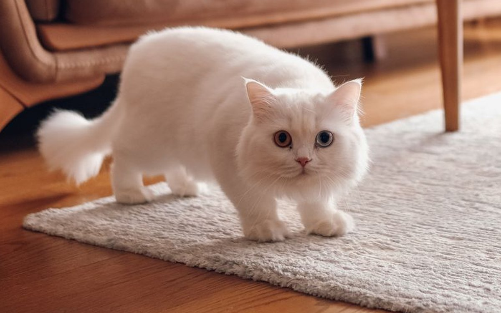

먼치킨 수명과 짧은 다리의 진실 — 근거로 따져 본 관절 관리 가이드

먼치킨 수명을 따로 계산한 대규모 자료는 아직 없고, 가장 가까운 근거는 영국 VetCompass 사망기록 7,936마리에서 나온 순종 고양이 평균 기대수명 10.41년(믹스 11.89년)입니다. 검색하면 나오는 '12~15년'은 출처를 찾지 못했습니다. 아장아장 걷는 짧은 다리로 사랑받는 품종이지만, 그 귀여움 뒤에는 입양 전 반드시 알아야 할 골격 건강 논쟁이 있습니다. 이 글은 먼치킨의 매력과 함께 국내 진료기록 속 위치, 그리고 어디까지가 확인된 사실이고 어디부터가 추정인지를 원문 강도 그대로 담았습니다.
한눈에 보는 먼치킨
| 크기 | 소~중형묘 (TICA 품종 소개 기준 성묘 암컷 5~7파운드·수컷 7~10파운드, 약 2.3~4.5kg) |
|---|---|
| 수명 | 품종 단독 대규모 자료 없음 · 영국 VetCompass 순종 평균 10.41년, 믹스 11.89년 |
| 공인 현황 | TICA 공인(2003년 5월 챔피언십) · CFA·영국 GCCF 미공인 |
| 털빠짐 | 중간 (단모/장모 모두 존재) |
| 활동량 | 중상 (호기심·장난기 많음) |
| 성격 | 사교적·명랑, 사람을 잘 따름 |
| 초보자 적합도 | 중간 (환경 준비와 건강 이해가 전제) |
수명 — 먼치킨만 따로 센 사망기록 통계는 없다
품종별 수명을 실제 사망기록으로 계산한 가장 큰 자료는 영국 VetCompass 참여 병원에서 2019년에 진료받던 고양이 가운데 사망이 확인된 7,936마리의 수명표입니다(Teng 외, J Feline Med Surg 2024). 이 논문은 사망이 15마리 미만인 품종을 '기타'로 묶었고, 버미즈 14.42년·페르시안 10.93년·랙돌 10.31년·브리티시 9.58년처럼 따로 수치가 나온 품종 가운데 먼치킨은 없습니다. 그래서 이 품종에 댈 수 있는 숫자는 순종 전체 평균 10.41년(95% 신뢰구간 9.99~10.83)과 믹스 11.89년이 전부입니다. 순종 쪽 숫자는 7,936마리 중 819마리(10.3%)에서 나왔습니다. 품종을 등록하는 TICA 는 품종 소개에 기대수명을 15~18년 이상이라고 적어 두었지만, 어떤 기록에서 계산한 값인지는 밝히지 않았습니다. 먼치킨은 혈통 유지를 위해 일반 집고양이와 교배하는 품종이라 어느 쪽 숫자에 더 가까울지도 이 자료로는 말할 수 없습니다.
영국 기준이라는 한계도 있습니다. 표본의 88.2%가 믹스였고 사망의 83.7%가 안락사여서, 논문 스스로 자연사 기준보다 수명이 짧게 잡혔을 것이라고 적었습니다. 같은 논문이 인용한 미국 밴필드 동물병원 수명표에서는 순종 11.85년, 믹스 11.69년으로 순서가 반대였습니다. '순종이라 짧게 산다'는 결론조차 나라마다 갈린다는 뜻이고, 국내 자료는 아래 국내 진료기록 항목에서 다룹니다.
짧은 다리의 진실 — 입양 전 필독
먼치킨의 짧은 다리는 귀여운 "특징"이 아니라, 연골 발달에 관여하는 유전자 변이의 결과입니다. 2020년 독일 하노버 수의과대학 연구진은 짧은 다리(표준) 먼치킨 42마리, 긴 다리로 태어난 먼치킨 15마리, 다른 품종 203마리까지 모두 260마리를 검사해 UGDH 유전자의 구조 변이를 찾아냈습니다(Struck 외, BMC Genetics 2020). 짧은 다리 42마리는 모두 변이를 한 벌만 가졌고, 두 벌 가진 개체는 한 마리도 없었습니다. 연구진은 이 결과와 표준 먼치킨의 적은 산자 수를 묶어, 두 벌을 물려받은 배아는 초기에 죽는 것으로 추정했습니다. 직접 관찰한 사실이 아니라 추정이라는 점은 구분해 둘 필요가 있습니다.
확인된 것, 추정인 것, 근거를 못 찾은 것
- 점프 능력 저하 — 확인된 쪽: 영국 동물복지 과학단체 UFAW(현 Science for Animal Welfare)는 짧은 다리가 점프 능력에 영향을 주며, 이 점은 품종 옹호자들도 인정한다고 적었습니다 (UFAW Genetic Welfare Problems — Munchkin). 다리 길이는 모든 먼치킨에 해당하므로 UFAW 는 '전 개체가 영향을 받는다'고 분류합니다.
- 관절염 — 추정: UFAW 의 논리는 이렇습니다. 관절에 비정상적인 하중이 걸리는 동물은 관절염 소인이 있고, 관절염은 품종을 가리지 않고 노령묘에게 흔하니, 먼치킨은 특히 위험할 가능성이 있어 보인다는 것입니다. 원문 표현이 'seems likely … may' 인 만큼, 발생률을 센 결과가 아니라 구조에서 끌어낸 추론으로 읽어야 합니다.
- 척추전만증·누두흉(가슴뼈 함몰) — 1차 근거를 못 찾은 쪽: 먼치킨 소개 글마다 빠지지 않는 항목이지만, 위 UFAW 문서와 2020년 유전 논문 어디에도 이 두 질환은 나오지 않습니다. 이 글을 고치면서 발생률을 제시한 연구를 찾지 못했기 때문에 '먼치킨에게 많다'고 쓰지 않습니다.
반대쪽 주장도 같은 무게로 옮깁니다. 이 품종을 공인한 TICA 는 고양이 척추가 개와 구조가 달라 짧은 다리가 개에게서 보이는 척추 문제로 이어지지 않는다고 설명하고, 2020년 논문도 변이를 한 벌 가진 먼치킨은 다리만 짧을 뿐 건강 손상은 없다고 적었습니다 (TICA — Munchkin). 다만 TICA 는 품종을 등록·홍보하는 단체이고, 논문의 관심사는 유전자 위치였지 노령기 관절 추적이 아니었습니다.
등록단체마다 갈리는 판단 — TICA 공인, CFA·GCCF 미공인
TICA 는 1994년 9월 먼치킨을 신품종 개발 프로그램에 받아들였고, 2003년 5월 챔피언십 자격을 줬습니다. 1983년 샌드라 호크네델이 발견한 짧은 다리 임신묘 '블랙베리'가 품종의 출발점이라고 TICA 는 설명합니다. 반면 미국 CFA 의 품종 목록 45개에는 먼치킨이 없습니다. 영국 GCCF 는 한발 더 나가, 해로운 유전 변이나 구조 이상이 핵심 특징인 신품종은 공인을 검토하지 않겠다고 번식 정책에 적고 그 사례로 '짧아진 다리(예: 먼치킨)'를 직접 들었습니다 (GCCF Breeding Policy 2.3항). UFAW 도 이 변이를 가진 고양이는 번식에 쓰지 말아야 한다고 적었습니다.
모든 먼치킨이 아픈 것은 아니고, 아프다고 단정할 자료도 없습니다. 다만 "알고 준비하는 것"과 "모르고 데려오는 것"은 완전히 다릅니다. 스코티시폴드의 귀처럼, 귀여운 외형이 유전 변이와 맞닿아 있는 품종이라는 점을 이해하고 결정해 주세요. (스코티시폴드의 접힌 귀 이야기도 함께 읽어보세요)
국내 진료기록 속 먼치킨 — 영국 수명표엔 없고 국내 병원엔 794건
전국 30개 동물병원의 2016~2017년 고양이 진료기록 32,728건을 품종별로 센 국내 논문 (Lee 외, J Vet Clin 2022)에서 먼치킨은 794건이었습니다. 상위 7개 품종(코리안숏헤어 40.5%, 페르시안 10.3%, 스코티시폴드 7.7% 등)에 들지 못해 '기타' 5,896건에 묶였지만, 그 안에서는 뱅갈 893건 다음으로 많았고 아메리칸숏헤어 788건, 브리티시숏헤어 456건, 랙돌 331건을 앞섰습니다.
영어권 자료와 가장 다른 지점이 여기입니다. 영국 VetCompass 수명표에는 브리티시(194마리)와 랙돌이 독립 항목으로 올라 있고 먼치킨은 집계 단위에도 못 미쳤는데, 국내 병원 기록에서는 순서가 뒤집힙니다. GCCF 가 공인을 거부하는 영국과 달리 국내에서는 브리티시숏헤어보다 병원에서 더 자주 만나는 품종이라는 뜻이고, 그만큼 영국·미국 통계를 그대로 가져다 쓸 수 없는 품종이기도 합니다.
숫자 하나는 바로잡아 둡니다. 논문 각주에는 먼치킨이 2.73%로 인쇄돼 있는데, 이는 바로 앞 뱅갈 893건의 비율과 같은 값입니다. 794건을 32,728건으로 직접 나누면 2.43%이므로 각주 쪽이 오기로 보이고, 이 글은 건수(794건)를 기준으로 삼았습니다. 또 이 수치는 '키우는 집의 비중'이 아니라 '병원 방문 건수'의 비중입니다. 같은 고양이가 다른 문제로 다시 오면 별도 건으로 세는 방식이라, 병원을 자주 찾는 품종일수록 크게 잡힙니다.
먼치킨만의 질환 분포는 이 논문에도 없다
이 논문의 품종별 질환군 분포표(Table 3)는 상위 7개 품종까지만 따로 계산했습니다. 먼치킨은 '기타' 열에 뱅갈·아메리칸숏헤어·아비시니안·노르웨이숲 등과 함께 섞여 있어, 아래 숫자를 먼치킨의 수치로 읽으면 안 됩니다. 5,896건 가운데 먼치킨은 794건뿐입니다.
| 질환군(ICD-11 분류) | 기타 품종군(먼치킨 포함) | 코리안숏헤어 |
|---|---|---|
| 근골격계·결합조직 질환 | 3.2% (2.8~3.7) | 4.6% (4.3~5.0) |
| 발달 이상(선천 기형) | 0.1% (0.0~0.2) | 0.1% (0.0~0.1) |
각 품종군의 진료 건수 중 해당 질환군이 차지한 비율과 95% 신뢰구간입니다(Lee 외 2022, Table 3). 근골격계 비중이 코리안숏헤어보다 낮다고 해서 '짧은 다리 품종도 관절은 멀쩡하다'는 근거가 되지는 않습니다. 여러 품종이 섞인 열인 데다, 이 자료는 전체의 77.6%가 4세 미만(평균 2.5세)인 젊은 집단입니다. UFAW 가 걱정하는 관절염은 노령기에 드러나는 병이라 이 연령 구성에서는 애초에 잡히기 어렵습니다. 국내 먼치킨의 노령기 관절 상태는 아직 아무도 세어 보지 않은 영역입니다.
국내 수명 자료 — 순종이 믹스보다 오래 살았다는 서울 기록, 읽는 법
서울 6개 동물병원의 2004~2022년 사망기록으로 고양이 1,213마리를 분석한 국내 논문 (Yang 외, Front Vet Sci 2025)에도 품종별 수치는 없고 먼치킨이라는 이름도 나오지 않습니다. 순종과 믹스로만 나눴는데 순종 575마리의 중앙 생존은 1,827일(약 5.0년), 믹스 638마리는 1,012.5일(약 2.8년)로 영국과 방향이 반대였습니다. 논문이 든 이유는 길고양이입니다. 국내 길고양이는 대부분 믹스이고, 2018년 농림축산식품부 조사에서 고양이 보호자의 20.6%가 길고양이를 데려와 키운다고 답했으며, 길에서 온 고양이는 고양이백혈병바이러스(FeLV) 같은 감염병 위험이 높다는 설명입니다.
1,827일을 '국내 순종 고양이는 5년 산다'로 받아들이면 곤란합니다. 표본이 병원에서 사망이 확인된 개체뿐이어서 지금 건강하게 살아 있는 고양이는 계산에 들어가지 않았고, 논문도 아픈 동물이 과대표집됐을 가능성을 한계로 적었습니다. 고양이 전체의 출생 시 기대수명이 5.38년으로 나온 것도 같은 구조 때문입니다. 이 자료에서 먼치킨 보호자가 가져갈 것은 절대 수명이 아니라, 영국의 '순종 10.41년 대 믹스 11.89년' 격차가 국내에서는 재현되지 않았다는 사실 하나입니다.
성격과 기질
성격만 보면 먼치킨은 모범생입니다. 사교적이고 명랑하며 사람을 잘 따르고, 다른 반려동물과도 잘 지냅니다. 호기심이 많아 까치처럼 반짝이는 물건을 모으는 개체도 있습니다. 다리가 짧아도 달리기는 빠르고, 미어캣처럼 뒷다리로 서서 두리번거리는 모습이 트레이드마크입니다.
관리 포인트 — 관절을 지키는 환경 만들기
수직 이동 배려
- 캣타워는 단 간격이 낮고 완만한 것으로 골라주세요.
- 소파·침대 옆에 스텝(계단)을 두어 높은 점프를 줄여주세요.
- 미끄러운 바닥엔 매트를 깔면 착지 충격이 줄어듭니다.
체중 관리 — 가장 중요
UFAW 가 짚은 위험이 '관절에 걸리는 비정상적인 하중'이라면, 체중은 그 하중 가운데 보호자가 직접 줄일 수 있는 부분입니다. 비만도 자가진단을 주기적으로 하고, 급여량을 재서 주세요. 사료 선택은 사료 고르는 기준을 참고하세요.
정기 검진
걸음걸이 변화, 점프 회피, 만졌을 때 아파하는 반응은 관절·척추 이상 신호일 수 있습니다. 이상이 보이면 미루지 말고 병원에서 확인하세요.
입양 전 현실 체크 — 환경 세팅이 진짜 비용
먼치킨은 분양가 자체가 낮지 않은 품종이지만, 초보 집사가 예상하지 못하는 지출은 데려온 다음에 시작됩니다. 이 품종은 그냥 고양이 용품이 아니라 관절 하중과 착지 충격을 줄여 주는 용품을 갖춰야 하기 때문입니다. 아래 금액은 시중에서 흔히 보이는 가격대일 뿐, 제품과 브랜드에 따라 위아래로 크게 벌어집니다.
| 낮은 단 캣타워 또는 계단형 구조물 | 10만~25만 원 |
|---|---|
| 소파·침대용 펫 스텝 2개 | 6만~15만 원 |
| 미끄럼 방지 매트 (주요 동선) | 5만~15만 원 |
| 입구 턱이 낮은 화장실 | 3만~8만 원 |
| 초기 환경 세팅 합계 | 25만~60만 원 |
| 월 유지비 | 9만~16만 원 (사료·모래·보조제·검진 적립) |
보험을 생각한다면 순서가 중요합니다. 짧은 다리에서 비롯된 관절·골격 문제는 약관상 선천성·유전성 질환으로 분류될 수 있고, 진단 기록이 남은 부위는 이후 가입에서 보장이 빠질 수 있습니다. 가입 의사가 있다면 증상이 나타나기 전, 가급적 어릴 때 여러 상품의 '선천성·유전성 질환' 조항과 고지 의무를 직접 읽고 비교해 보세요.
하루 돌봄 시간과 집 구조
밥·화장실·빗질에 놀이까지 하루 20~30분이면 됩니다. 다만 놀이는 한 번에 몰아서 하기보다 짧게, 낮게, 여러 번으로 나누는 편이 몸에 부담이 적습니다.
집은 넓은 곳보다 높이 차가 적은 평면 구조가 유리합니다. 그런 점에서 원룸이나 작은 아파트는 오히려 잘 맞습니다. 반대로 이 품종에게 곤란한 구조가 하나 있는데, 복층 원룸의 좁고 가파른 사다리 계단입니다. 오르내리다 미끄러지면 허리에 그대로 충격이 가므로, 그런 집이라면 계단 입구를 막고 아래층 생활만 하게 하는 편이 안전합니다.
얼마나 혼자 둘 수 있을까
먼치킨은 사교적인 성격이라 다른 고양이보다 사람을 더 찾는 편입니다. 하루 8시간 정도의 부재는 대체로 무난하지만, 매일 12시간 이상 혼자 있는 생활이 이어지면 심심함에서 오는 행동 문제(한밤중 소란, 물건 떨어뜨리기)가 나타나기 쉽습니다. 장시간 부재가 잦다면 두 마리 생활도 방법입니다. 다만 짝은 쉬지 않고 뛰어다니는 어린 고양이보다, 비슷한 속도로 노는 아이가 좋습니다. 속도가 안 맞으면 먼치킨 쪽이 무리하게 됩니다.
나이대별 관리 포인트
성장기 (~12개월) — 이때 만든 동선이 평생 간다
생후 4~8개월은 활동량이 폭발하는 시기입니다. 이 무렵 소파나 식탁에 뛰어올라 성공한 경험이 쌓이면 그 경로가 습관으로 굳어버립니다. 스텝은 문제가 생긴 뒤가 아니라 데려온 첫날 놓아야 하는 이유입니다.
- 자세나 걸음걸이가 달라졌는지는 매일 보는 눈으로는 알아채기 어렵습니다. 한 달에 한 번, 같은 위치와 각도에서 옆모습 사진과 걷는 영상을 남겨두면 비교할 기준이 생깁니다.
- UFAW 는 고양이 관절염을 확인하고 정도를 가늠하는 데 방사선 촬영이 필요할 수 있다고 적습니다. 첫 검진 때 다리 관절 방사선을 한 번 찍어 기준 영상으로 남겨두면, 나이 들어 비교할 자료가 됩니다. 다만 보험 가입을 이유로 필요한 검사를 미루지는 마세요. 진단이 늦어져 생기는 손해가 훨씬 큽니다.
- 이 시기 놀이는 사냥 욕구를 채우되 착지 충격을 줄이는 방향으로 잡으세요.
성묘기 (1~7세) — 100g 단위로 보는 체중
3.5kg 고양이에게 300g은 체중의 8~9%입니다. TICA 품종 소개의 성묘 체중은 암컷 5~7파운드(약 2.3~3.2kg), 수컷 7~10파운드(약 3.2~4.5kg)여서, 가벼운 암컷이라면 같은 300g 도 비율이 더 커집니다. 가정용 저울로는 고양이만 올려 재기 어려우니, 이동장에 넣어 함께 잰 뒤 빈 이동장 무게를 빼세요. 매달 같은 저울, 같은 이동장으로 재야 100g 단위의 변화가 의미를 갖습니다. (비만도 자가진단으로 체형 확인하기)
이 시기에 눈여겨볼 변화는 이런 것들입니다.
- 잘 쓰던 스텝이나 계단을 어느 날부터 쓰지 않음
- 뒷다리로 서서 두리번거리던 자세를 더 이상 하지 않음
- 화장실에서 자세를 오래 잡거나 들어가기를 망설임
이런 변화가 갑자기 생겼다면 성격이나 기분 문제가 아닐 수 있으니 병원에서 확인해 보세요.
노령기 (8세~) — 동선을 한 번 더 낮출 때
- 젊을 때 잘 쓰던 3단 스텝이 노령기에는 높게 느껴질 수 있습니다. 해마다 한 번씩 단 간격을 다시 재고 낮춰주세요.
- 화장실은 턱이 5cm 이하이거나 한쪽 면이 낮은 형태로 바꿔주는 것이 좋습니다.
- 밥그릇과 물그릇을 살짝 높여주면 목과 허리를 덜 굽히게 되어 식사가 편해집니다.
- 관절이 불편해지면 화장실 밖 배변이 늘 수 있습니다. 버릇이나 반항으로 오해하기 전에 몸 상태와 화장실 접근성부터 점검하세요. (화장실 문제 원인별 체크리스트)
그루밍 — 스스로 닿지 않는 부위 챙기기
먼치킨 그루밍에서 중요한 것은 털 길이가 아니라 팔다리 길이입니다. 다리가 짧으면 몸을 비틀어 등 가운데와 꼬리 밑까지 혀가 닿기 어렵고, 뒷발로 귀 뒤나 턱 아래를 긁는 동작도 다른 고양이보다 서툰 경우가 있습니다. 그래서 손질이 필요한 자리가 정해져 있습니다.
- 등 가운데에서 꼬리 밑 — 가장 먼저 기름지고 뭉치는 구간입니다. 단모라도 주 2회는 이 부위를 중심으로 빗어주세요.
- 항문 주변과 뒷다리 안쪽 — 배변 후 스스로 정리하지 못해 털에 묻는 일이 생깁니다. 장모 먼치킨이라면 이 부위를 짧게 정리해두는 편이 위생적입니다. 미용실에서는 '위생 미용'으로 요청하면 되고, 비용은 부분 미용 2만~5만 원, 전체 미용 6만~12만 원 선이지만 업체와 지역에 따라 차이가 큽니다.
- 턱 아래 — 혀가 닿지 않는 자리라 검은 알갱이 같은 턱 여드름이 생기기 쉽습니다. 플라스틱 식기를 도자기나 스테인리스로 바꾸고 매일 닦아주면 나아지는 경우가 많으니 먼저 시도해 볼 만합니다. 붉게 붓거나 진물이 보이면 짜지 말고 병원에서 확인하세요.
- 발톱 — 2~3주 간격. 몸을 웅크리는 자세가 불편한 아이는 뒷발톱 손질을 특히 싫어합니다. 한 번에 다 하려 하지 말고 하루에 한두 개씩 나눠 깎으면 서로 편합니다.
- 목욕 — 정기적으로 할 필요는 없습니다. 배나 뒷다리에 뭔가 묻었을 때 그 부위만 미지근한 물수건으로 닦아내는 것으로 대부분 해결됩니다. 전신을 씻겨야 한다면 세워둘 필요 없이 물을 얕게 받은 대야에서 짧게 끝내세요.
안는 법과 놀이법 (먼치킨 전용)
안는 법 — 겨드랑이만 잡지 마세요
아이 겨드랑이에 손을 넣어 번쩍 들어 올리는 방식은 어떤 고양이에게도 좋지 않지만, 먼치킨에게는 특히 그렇습니다. 앞다리가 짧아 몸통과 뒷다리 무게가 그대로 허리에 매달리는 형태가 되기 때문입니다.
- 한 손은 앞다리 뒤 가슴 아래를 받치고, 다른 손으로 엉덩이와 뒷다리를 함께 받쳐 몸이 수평이 되게 안으세요.
- 내려놓을 때 공중에서 손을 놓아 뛰어내리게 하지 말고, 네 발이 바닥에 닿는 것을 확인한 뒤 손을 떼세요.
- 안기는 것을 싫어하는 아이라면 억지로 들지 말고, 무릎 위로 스스로 올라오도록 유도하는 편이 낫습니다.
놀이와 훈련
낚싯대를 머리 위로 높이 들어 뛰어오르게 하는 놀이는 피하세요. 대신 장난감을 바닥에 붙여 좌우로 빠르게 끄는 방식이 이 품종의 몸에 맞고, 사냥 욕구도 충분히 채워집니다. 터널이나 상자, 노즈워크 매트처럼 수평으로 움직이는 놀이를 늘리면 활동량은 유지하면서 관절 부담은 줄일 수 있습니다.
훈련 면에서 먼치킨은 어렵지 않은 편입니다. 사람 반응에 민감하고 학습이 빨라, 이름을 부르면 오기·이동장에 스스로 들어가기·발톱 깎을 때 가만히 있기 같은 것을 간식과 함께 짧게 반복하면 잘 익힙니다. 한 번에 몇 분, 성공했을 때 바로 보상하는 방식이 효과적입니다. 반대로 야단치거나 억지로 붙잡는 방식은 사교적인 성격일수록 역효과가 크니 피하세요.
초보 집사가 자주 하는 실수 5가지
- "점프를 못 하니까 안전하다"고 생각한다 — 먼치킨은 생각보다 잘 뜁니다. 문제는 뛸 수 있느냐가 아니라 짧은 다리로 받아내야 하는 착지 충격입니다. 못 올라갈 거라 믿고 높은 선반에 방석을 올려두면 결국 올라가고, 다치는 건 내려올 때입니다.
- 미어캣 자세를 반복해서 시킨다 — 뒷다리로 서는 모습이 귀엽다고 간식을 위로 들어 계속 시키는 경우가 많습니다. 스스로 가끔 하는 것과 사람이 유도해 반복시키는 것은 다릅니다. 간식은 코높이에서 주세요.
- 사진 찍으려고 번쩍 들어 올린다 — 짧은 다리가 강조되는 각도를 만들려다 허리에 무리를 주는 자세가 나오기 쉽습니다. 위의 안는 법을 참고해 항상 엉덩이를 받쳐주세요.
- 턱 높은 화장실을 그대로 쓴다 — 드나들기 힘들면 가장자리에 걸치거나 아예 밖에서 해결하는 일이 생깁니다. 성격이나 버릇 문제로 넘기기 전에 입구 높이부터 확인해 보세요.
- 사료를 눈대중으로 준다 — 체구가 작아서 조금만 더 줘도 비율로는 큰 차이가 납니다. 계량컵보다 주방 저울로 g 단위를 재는 편이 정확하고, 간식은 하루 총열량의 10% 안쪽으로 잡으세요. (사료 고르는 기준)
이런 분께 잘 맞아요
- 품종의 건강 이슈를 이해하고 환경(스텝·낮은 캣타워)을 준비할 수 있는 분
- 사교적이고 장난기 많은 고양이를 원하는 가정
- 정기 검진과 체중 관리를 꾸준히 할 수 있는 집사
자주 묻는 질문 (FAQ)
Q. 먼치킨 수명은 몇 년인가요?
먼치킨만 따로 계산한 대규모 수명 자료는 없습니다. 가장 가까운 근거는 영국 VetCompass 사망기록 7,936마리 수명표의 순종 고양이 평균 10.41년, 믹스 11.89년입니다. 서울 6개 병원 사망기록에서는 순종 중앙 생존이 1,827일로 믹스 1,012.5일보다 길었지만, 병원에서 사망이 확인된 개체만 센 값이라 실제 수명보다 낮게 나옵니다.
Q. 먼치킨끼리 교배하면 왜 안 되나요?
짧은 다리 변이를 양쪽 부모에게서 모두 물려받은 배아는 태어나기 전에 죽는 것으로 추정됩니다. 2020년 유전 논문이 검사한 표준 먼치킨 42마리 중 변이를 두 벌 가진 개체는 한 마리도 없었습니다. 그래서 먼치킨은 다리가 긴 고양이와 교배시키며, 이 점이 번식 윤리 논쟁의 한 축입니다.
Q. 다리가 짧으면 화장실 이용이 불편하지 않나요?
입구 턱이 낮은 화장실을 골라주면 문제없습니다. 다만 몸을 잘 관찰해서 드나들기 힘들어하는 기색이 있으면 바꿔주세요.
Q. 건강한 먼치킨을 만나려면 어떻게 해야 하나요?
부모묘의 관절·골격 건강 이력과 교배 상대가 다리 긴 고양이였는지를 확인할 수 있는 곳에서 입양하고, 입양 직후 기초 검진으로 골격 상태를 확인해 두는 것이 좋습니다.